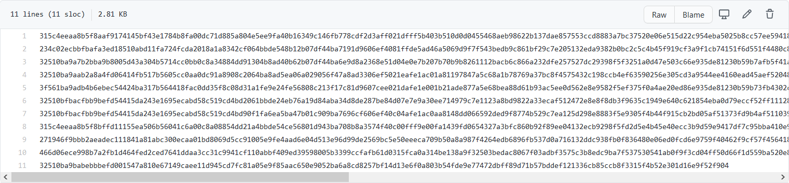
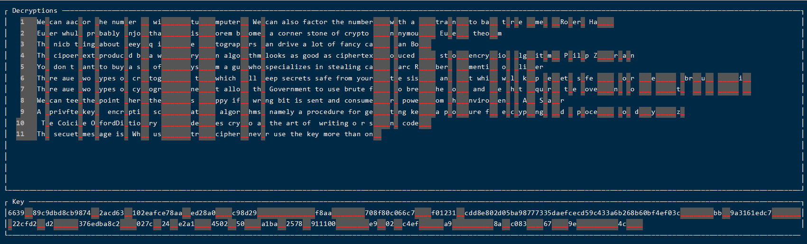
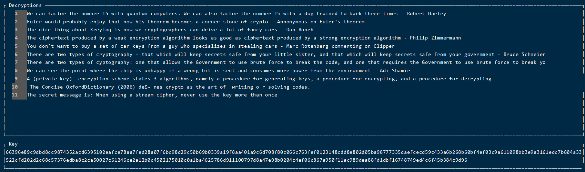

Many Time Pad
0x01 一次性密码本(One Time Pad)
一次性密码本是一种非常简单的密码，它的原理是将明文与一串随机的比特序列进行XOR运算。如果将硬币的正面设为0，反面设为1，则通过不断掷硬币就能够产生这样一串随机的比特序列
举个例子，midnight这个单词的ASCII码的二进制表示如下
1 | m i d n i g h t |
再随机生成一串长度相同的随即比特序列，作为XOR的密钥
1 | 01101011 11111010 01001000 11011000 01100101 11010101 10101111 00011100（密钥） |
1.1 一次性密码本的加密
将明文与密钥进行XOR运算，得到密文
1 | 01101101 01101001 01100100 01101110 01101001 01100111 01101000 01110100（明文“midnight”） |
1.2 一次性密码本的解密
将密文与密钥进行XOR运算，得到明文
1 | 00000110 10010011 00101100 10110110 00001100 10110010 11000111 01101000（密文） |
1.3 一次性密码本是无法破译的
想要通过密文解密获得明文midnight，需要获得密钥。但是当我们没有密钥去破译的时候，破译出来的结果是无限的，就算破译出来一个看似合理的明文，也无法判断它就是正确的明文
假设我们猜出来的密钥是
1 | 01100111 11110001 01001111 11010010 01101001 11010100 10100000 00000000 |
将猜出来的密钥与密文进行XOR运算
1 | 00000110 10010011 00101100 10110110 00001100 10110010 11000111 01101000（密文） |
相同的密文，用不同的密钥解密出的明文完全不同。在不知道正确明文的情况下，abcdefgh也是一个合理的解
在我们尝试对一次性密码本解密的过程中，所有64比特的排列组合都会出现，其中会包括aaaaaaaa这样的字符序列，或者onenight这样的单词，也可能出现￥9hkbyqw这样的乱码，我们无法证明哪个结果是正确的明文，所以一次性密码本理论上是无法破译的
1.4 一次性密码本为什么没有被使用
1.4.1 密钥的配送
密钥的长度、重要性和明文是一模一样的。如果能够保证密钥安全地发送给加密通信的另一方，那明文也可以用同样的方法发送，这样就失去了密钥的意义
1.4.2 密钥的保存
与密钥的配送一样，如果能够保存跟明文一样长的密钥，也就能够保存明文，使用密钥就成了多此一举
1.4.3 密钥的重用
之所以叫一次性密码本，就是因为它的密钥只能使用一次。如果使用多次，密文就会被破解，这也是这篇博客的主题——Many Time Pad
1.4.4 密钥的同步
当明文很长时，密钥也会很长，在通信的过程中可能会有比特序列出错，导致不能解密
1.4.5 密钥的生成
一次性密码本对密钥的要求是一定要随机生成，这里的随机数不是计算机生成的伪随机数，而是无重现性的真正随机数，所需要的成本很高
0x02 Many Time Pad
2.1 Many Time Pad的原理
与一次性密码本的One Time Pad对应，Many Time Pad的意思就是将一个密钥使用了多次，下面举一个例子来说明
1 | 明文A XOR 密钥 = 密文A |
当一个密钥被使用多次的时候，黑客就能获取到多个用同一密钥加密的密文，将两个密文进行XOR运算，得到的结果就将密钥给消去了
如果有更多的同一密钥加密的密文，就可以通过猜测其中一条密文的方法，获得其他密文的解密情况
2.2 实践
对于Many Time Pad，有一个很好用的工具：MTP
用下面的命令创建一个Python虚拟环境来安装MTP
建议使用Linux，Windows环境下会出现缺少
fcntl的问题
1 | # 安装虚拟换行 |
这里使用MTP提供的示例文件
它的内容是11条由相同密钥加密的密文，用hex的格式存储，MTP支持的也是hex格式

使用MTP打开示例文件
1 | mtp examples/sample.ciphertexts |
显示如下，MTP已经自动帮我们识别出了一些语句，接下来可以自己手动去猜测文本的内容

这是猜测的结果

退出虚拟环境
1 | # 退出虚拟环境 |